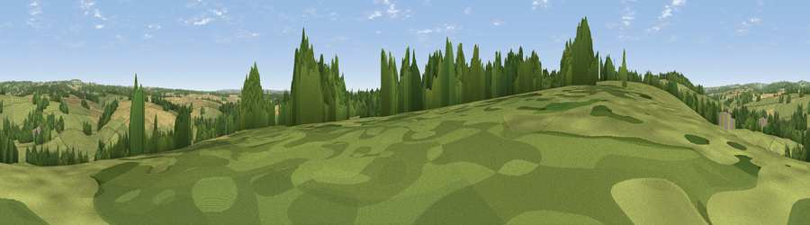

Viewpoint near Stoke
#34889 in England · top 57% of its area beats it · near StokeThe view, rendered

A 360° render of this exact spot computed from the terrain model, tree cover and land cover — summer colours, afternoon light, calibrated against photographs of famous viewpoints. Real trees, hedges and buildings will differ in detail.
The panorama
Grey silhouette: terrain skyline in each direction (720 bearings, Earth curvature and refraction included). Dashed green: skyline with trees (+15 m) and buildings (+8 m) as obstacles. Blue strip: how far the ground is visible on each bearing.
Where the view opens
Wedge length = distance to the farthest visible ground on that bearing (vegetation-aware). Rings at 10, 25 and 50 km.
What fills the view
53% grassland · 26% cropland · 20% woodland ·
Angular shares of the visible panorama (visual magnitude), not map area. Landscape diversity 0.46 (0–1 Shannon).
Key numbers
More beautiful places nearby
The staircase of upgrades: each row has a higher view potential than everything closer. Driving times are estimates from straight-line distance, calibrated against real road routing — check an actual route before setting out.
| Place | Direction | Drive | Score |
|---|---|---|---|
| Stoke Hill | WNW · 1 km | ~3 min | 48.2 |
| Viewpoint near Upton | NW · 5 km | ~11 min | 50.1 |
| Viewpoint near Old Burghclere | NE · 7 km | ~14 min | 57.3 |
| Viewpoint near Old Burghclere | NE · 7 km | ~15 min | 67.5 |
| Viewpoint near Old Burghclere | NE · 8 km | ~16 min | 68.7 |
| Beacon Hill | NE · 8 km | ~17 min | 76.7 |
| Martinsell viewpoint | WNW · 26 km | ~42 min | 77.3 |
| Viewpoint near Buriton | SE · 44 km | ~64 min | 80.0 |
51.25742, -1.42352 · source: screening · position refined by local search. Computed location — check access rights before visiting.